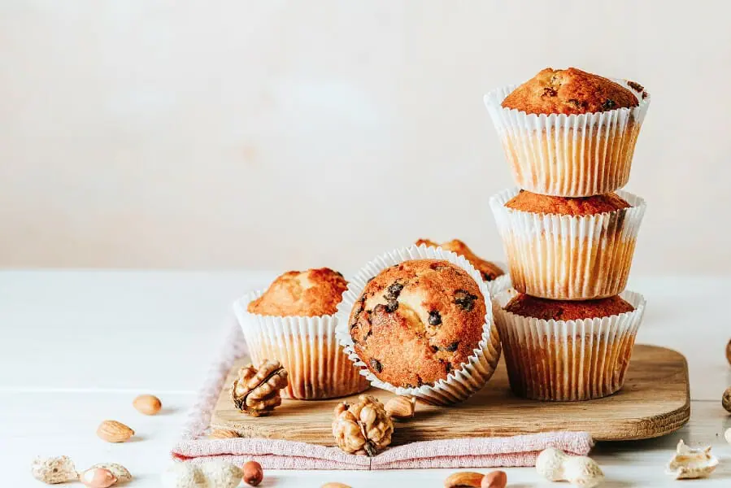
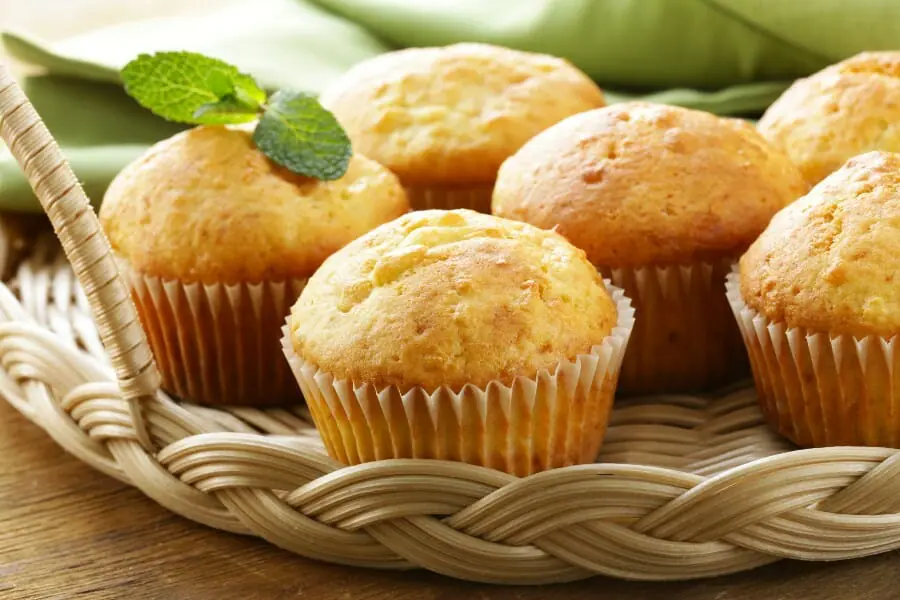

Homemade Cupcakes Recipe
Rum and Raisin Cupcakes

Ingredients:
4 tablespoon Dark Rum
1/4 cup raisins soaked overnight
1 tablespoon brow sugar
1/2 cup sugar granulated
a pinch of salt
2 eggs
110g butter, soft
1/4 cup buttermilk
1 cup self-raising flour
Steps to bake:
Place paper baking cases in a muffin tin.
Combine 1 1/2 tablespoon of rum, butter, sugar, self-raising flour, eggs, buttermilk and salt in a bowl.
Mix and beat well until smooth, about 2 minutes.
Add the raisins and mix well.
Spoon the mixture into cases and bake.
Meanwhile mix 1/2 tablespoon rum and brown sugar in a pan over low heat.
Stir utill the sugar dissolves and simmer for 3 to 4 minutes.
Remove pan from heat and keep aside.
Remove tin from the oven and prick holes in each cake.
Pour the rum syrup over and cool for 5 minutes.
Your Rum and Raisin Cupcakes are now ready to serve! Yay!
Baking time:
Preheat the oven to 175℃. Bake for 20 minutes.
Vanilla Cupcakes

Ingredients:
2 eggs
110g butter, soft
1/4 cup buttermilk
1 cup milk
1/2 cup brow sugar
a pinch of salt
2 tablespoon vanilla extract
1 cup self-raising flour
Steps to bake:
Place paper baking cases in a muffin tin.
Beat eggs, sugar and salt in a large bowl until pale and thick.
Add butter, buttermilk, milk and vanilla extract into the egg mixture.
Fold the flour into the mixture until well blended.
Spoon the mixture into cases and bake.
Remove tin from the oven and cool for 5 minutes.
Your Vanilla Cupcakes are now ready to serve! Enjoy!
Baking time:
Preheat the oven to 160℃. Bake for 20 minutes.
Have Fun Baking!